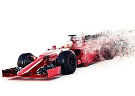
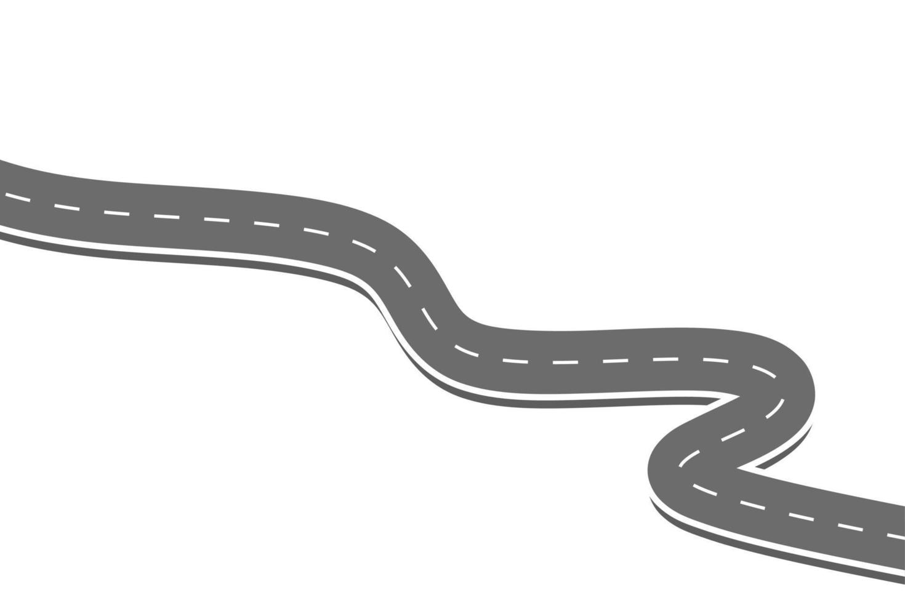

Programacion

𝘏𝘢𝘤𝘦 𝘶𝘯 𝘢ñ𝘰 𝘤𝘰𝘮𝘦𝘯𝘤é 𝘮𝘪 𝘤𝘢𝘳𝘳𝘦𝘳𝘢 𝘥𝘦 𝘪𝘯𝘨𝘦𝘯𝘪𝘦𝘳í𝘢 𝘦𝘯 𝘴𝘪𝘴𝘵𝘦𝘮𝘢𝘴 𝘦𝘯 𝘭𝘢 𝘜𝘈𝘋𝘌. 𝘕𝘰 𝘴𝘢𝘣í𝘢 𝘢𝘣𝘴𝘰𝘭𝘶𝘵𝘢𝘮𝘦𝘯𝘵𝘦 𝘯𝘢𝘥𝘢 𝘥𝘦 𝘱𝘳𝘰𝘨𝘳𝘢𝘮𝘢𝘤𝘪ó𝘯, 𝘮𝘦 𝘴𝘦𝘯𝘵í𝘢 𝘪𝘯𝘴𝘦𝘨𝘶𝘳𝘰 𝘺 𝘱𝘦𝘯𝘴𝘢𝘣𝘢 𝘴𝘪 𝘦𝘳𝘢 𝘭𝘢 𝘥𝘦𝘤𝘪𝘴𝘪ó𝘯 𝘤𝘰𝘳𝘳𝘦𝘤𝘵𝘢.
𝘏𝘰𝘺 𝘦𝘯 𝘥í𝘢, 𝘭𝘶𝘦𝘨𝘰 𝘥𝘦 𝘷𝘢𝘳𝘪𝘰𝘴 𝘤𝘶𝘳𝘴𝘰𝘴 𝘺 𝘤𝘭𝘢𝘴𝘦𝘴 𝘥𝘦 𝘭𝘢 𝘧𝘢𝘤𝘶𝘭𝘵𝘢𝘥, 𝘺𝘢 𝘱𝘶𝘦𝘥𝘰 𝘥𝘦𝘤𝘪𝘳 𝘲𝘶𝘦 𝘩𝘦 𝘢𝘱𝘳𝘦𝘯𝘥𝘪𝘥𝘰 𝘮𝘶𝘤𝘩𝘰 𝘥𝘦 𝘗𝘺𝘵𝘩𝘰𝘯, 𝘢𝘭𝘨𝘰 𝘥𝘦 𝘑𝘢𝘷𝘢 𝘺 𝘦𝘴𝘵𝘰𝘺 𝘢𝘱𝘳𝘦𝘯𝘥𝘪𝘦𝘯𝘥𝘰 𝘏𝘛𝘔𝘓, 𝘊𝘚𝘚, 𝘑𝘢𝘷𝘢𝘚𝘤𝘳𝘪𝘱𝘵, 𝘦𝘵𝘤.
𝘗𝘶𝘦𝘥𝘰 𝘥𝘦𝘤𝘪𝘳 𝘲𝘶𝘦 𝘤𝘰𝘯 𝘦𝘭 𝘱𝘢𝘴𝘢𝘳 𝘥𝘦𝘭 𝘵𝘪𝘦𝘮𝘱𝘰 𝘮𝘦 𝘧𝘶𝘪 𝘴𝘪𝘯𝘵𝘪𝘦𝘯𝘥𝘰 𝘮á𝘴 𝘴𝘦𝘨𝘶𝘳𝘰 𝘺 𝘲𝘶𝘦 𝘦𝘭𝘦𝘨í 𝘭𝘢 𝘤𝘢𝘳𝘳𝘦𝘳𝘢 𝘤𝘰𝘳𝘳𝘦𝘤𝘵𝘢.
15 de Junio de 2025
Futbol
𝘜𝘯𝘢 𝘥𝘦 𝘭𝘢𝘴 𝘤𝘰𝘴𝘢𝘴 𝘲𝘶𝘦 𝘮á𝘴 𝘥𝘪𝘴𝘧𝘳𝘶𝘵𝘰 𝘷𝘦𝘳 𝘦𝘴 𝘭𝘢 𝘍ó𝘳𝘮𝘶𝘭𝘢 1. 𝘔𝘦 𝘢𝘱𝘢𝘴𝘪𝘰𝘯𝘢 𝘴𝘦𝘨𝘶𝘪𝘳 𝘤𝘢𝘥𝘢 𝘤𝘢𝘳𝘳𝘦𝘳𝘢, 𝘤𝘰𝘯𝘰𝘤𝘦𝘳 𝘢 𝘭𝘰𝘴 𝘱𝘪𝘭𝘰𝘵𝘰𝘴, 𝘭𝘰𝘴 𝘦𝘲𝘶𝘪𝘱𝘰𝘴 𝘺 𝘭𝘢𝘴 𝘦𝘴𝘵𝘳𝘢𝘵𝘦𝘨𝘪𝘢𝘴 𝘲𝘶𝘦 𝘴𝘦 𝘶𝘴𝘢𝘯 𝘥𝘶𝘳𝘢𝘯𝘵𝘦 𝘭𝘢 𝘵𝘦𝘮𝘱𝘰𝘳𝘢𝘥𝘢.
𝘔𝘦 𝘨𝘶𝘴𝘵𝘢 𝘢𝘯𝘢𝘭𝘪𝘻𝘢𝘳 𝘤ó𝘮𝘰 𝘪𝘯𝘧𝘭𝘶𝘺𝘦 𝘤𝘢𝘥𝘢 𝘤𝘪𝘳𝘤𝘶𝘪𝘵𝘰 𝘺 𝘤ó𝘮𝘰 𝘤𝘢𝘮𝘣𝘪𝘢𝘯 𝘭𝘰𝘴 𝘳𝘦𝘴𝘶𝘭𝘵𝘢𝘥𝘰𝘴 𝘤𝘰𝘯 𝘤𝘢𝘥𝘢 𝘎𝘳𝘢𝘯 𝘗𝘳𝘦𝘮𝘪𝘰.
𝘈𝘥𝘦𝘮á𝘴, 𝘴𝘪𝘨𝘰 𝘭𝘢𝘴 𝘤𝘭𝘢𝘴𝘪𝘧𝘪𝘤𝘢𝘤𝘪𝘰𝘯𝘦𝘴, 𝘭𝘰𝘴 𝘦𝘯𝘵𝘳𝘦𝘯𝘢𝘮𝘪𝘦𝘯𝘵𝘰𝘴 𝘺 𝘱𝘢𝘳𝘵𝘪𝘤𝘪𝘱𝘰 𝘦𝘯 𝘦𝘭 𝘍𝘢𝘯𝘵𝘢𝘴𝘺 𝘥𝘦 𝘍1 𝘤𝘰𝘯 𝘢𝘮𝘪𝘨𝘰𝘴.
Formula 1

𝘜𝘯𝘢 𝘥𝘦 𝘭𝘢𝘴 𝘤𝘰𝘴𝘢𝘴 𝘲𝘶𝘦 𝘮á𝘴 𝘥𝘪𝘴𝘧𝘳𝘶𝘵𝘰 𝘷𝘦𝘳 𝘦𝘴 𝘭𝘢 𝘍ó𝘳𝘮𝘶𝘭𝘢 1. 𝘔𝘦 𝘢𝘱𝘢𝘴𝘪𝘰𝘯𝘢 𝘴𝘦𝘨𝘶𝘪𝘳 𝘤𝘢𝘥𝘢 𝘤𝘢𝘳𝘳𝘦𝘳𝘢, 𝘤𝘰𝘯𝘰𝘤𝘦𝘳 𝘢 𝘭𝘰𝘴 𝘱𝘪𝘭𝘰𝘵𝘰𝘴, 𝘭𝘰𝘴 𝘦𝘲𝘶𝘪𝘱𝘰𝘴 𝘺 𝘭𝘢𝘴 𝘦𝘴𝘵𝘳𝘢𝘵𝘦𝘨𝘪𝘢𝘴 𝘲𝘶𝘦 𝘴𝘦 𝘶𝘴𝘢𝘯 𝘥𝘶𝘳𝘢𝘯𝘵𝘦 𝘭𝘢 𝘵𝘦𝘮𝘱𝘰𝘳𝘢𝘥𝘢.
𝘔𝘦 𝘨𝘶𝘴𝘵𝘢 𝘢𝘯𝘢𝘭𝘪𝘻𝘢𝘳 𝘤ó𝘮𝘰 𝘪𝘯𝘧𝘭𝘶𝘺𝘦 𝘤𝘢𝘥𝘢 𝘤𝘪𝘳𝘤𝘶𝘪𝘵𝘰 𝘺 𝘤ó𝘮𝘰 𝘤𝘢𝘮𝘣𝘪𝘢𝘯 𝘭𝘰𝘴 𝘳𝘦𝘴𝘶𝘭𝘵𝘢𝘥𝘰𝘴 𝘤𝘰𝘯 𝘤𝘢𝘥𝘢 𝘎𝘳𝘢𝘯 𝘗𝘳𝘦𝘮𝘪𝘰.
𝘈𝘥𝘦𝘮á𝘴, 𝘴𝘪𝘨𝘰 𝘭𝘢𝘴 𝘤𝘭𝘢𝘴𝘪𝘧𝘪𝘤𝘢𝘤𝘪𝘰𝘯𝘦𝘴, 𝘭𝘰𝘴 𝘦𝘯𝘵𝘳𝘦𝘯𝘢𝘮𝘪𝘦𝘯𝘵𝘰𝘴 𝘺 𝘱𝘢𝘳𝘵𝘪𝘤𝘪𝘱𝘰 𝘦𝘯 𝘦𝘭 𝘍𝘢𝘯𝘵𝘢𝘴𝘺 𝘥𝘦 𝘍1 𝘤𝘰𝘯 𝘢𝘮𝘪𝘨𝘰𝘴..
Juegos
𝘑𝘶𝘨𝘢𝘳 𝘫𝘶𝘦𝘨𝘰𝘴 𝘦𝘴 𝘶𝘯𝘢 𝘥𝘦 𝘮𝘪𝘴 𝘢𝘤𝘵𝘪𝘷𝘪𝘥𝘢𝘥𝘦𝘴 𝘧𝘢𝘷𝘰𝘳𝘪𝘵𝘢𝘴. 𝘔𝘦 𝘨𝘶𝘴𝘵𝘢 𝘳𝘦𝘭𝘢𝘫𝘢𝘳𝘮𝘦 𝘺 𝘥𝘪𝘷𝘦𝘳𝘵𝘪𝘳𝘮𝘦 𝘤𝘰𝘯 𝘥𝘪𝘴𝘵𝘪𝘯𝘵𝘰𝘴 𝘵𝘪𝘱𝘰𝘴 𝘥𝘦 𝘫𝘶𝘦𝘨𝘰𝘴.
𝘚𝘶𝘦𝘭𝘰 𝘫𝘶𝘨𝘢𝘳 𝘤𝘰𝘯 𝘢𝘮𝘪𝘨𝘰𝘴 𝘦𝘯 𝘭í𝘯𝘦𝘢 𝘺 𝘵𝘢𝘮𝘣𝘪é𝘯 𝘥𝘪𝘴𝘧𝘳𝘶𝘵𝘰 𝘷𝘦𝘳 𝘺 𝘫𝘶𝘨𝘢𝘳 𝘫𝘶𝘦𝘨𝘰𝘴 𝘤𝘰𝘮𝘱𝘦𝘵𝘪𝘵𝘪𝘷𝘰𝘴 𝘵𝘢𝘭𝘦𝘴 𝘤𝘰𝘮𝘰 𝘭𝘰𝘴 𝘥𝘦 𝘦𝘚𝘱𝘰𝘳𝘵.
𝘈𝘥𝘦𝘮á𝘴 𝘥𝘦 𝘦𝘯𝘵𝘳𝘦𝘵𝘦𝘯𝘦𝘳, 𝘮𝘦 𝘢𝘺𝘶𝘥𝘢𝘯 𝘢 𝘤𝘰𝘯𝘰𝘤𝘦𝘳 𝘨𝘦𝘯𝘵𝘦 𝘯𝘶𝘦𝘷𝘢 𝘲𝘶𝘦 𝘴𝘪𝘨𝘢𝘯 𝘧𝘰𝘳𝘮𝘢𝘯𝘥𝘰 𝘱𝘢𝘳𝘵𝘦 𝘥𝘦 𝘮𝘪 𝘷𝘪𝘥𝘢.
MI FUTURO

𝘈 𝘮𝘦𝘥𝘪𝘥𝘢 𝘲𝘶𝘦 𝘢𝘷𝘢𝘯𝘻𝘰 𝘦𝘯 𝘮𝘪 𝘤𝘢𝘳𝘳𝘦𝘳𝘢 𝘺 𝘦𝘯 𝘮𝘪 𝘷𝘪𝘥𝘢 𝘱𝘦𝘳𝘴𝘰𝘯𝘢𝘭, 𝘮𝘪𝘴 𝘦𝘹𝘱𝘦𝘤𝘵𝘢𝘵𝘪𝘷𝘢𝘴 𝘢 𝘧𝘶𝘵𝘶𝘳𝘰 𝘴𝘦 𝘷𝘶𝘦𝘭𝘷𝘦𝘯 𝘮𝘢𝘴 𝘮𝘰𝘵𝘪𝘷𝘢𝘥𝘰𝘳𝘢𝘴.
𝘌𝘴𝘱𝘦𝘳𝘰 𝘱𝘰𝘥𝘦𝘳 𝘤𝘰𝘯𝘴𝘰𝘭𝘪𝘥𝘢𝘳𝘮𝘦 𝘤𝘰𝘮𝘰 𝘱𝘳𝘰𝘧𝘦𝘴𝘪𝘰𝘯𝘢𝘭 𝘦𝘯 𝘦𝘭 á𝘳𝘦𝘢 𝘥𝘦 𝘭𝘢 𝘪𝘯𝘨𝘦𝘯𝘪𝘦𝘳í𝘢, 𝘦𝘴𝘱𝘦𝘤𝘪𝘢𝘭𝘪𝘻á𝘯𝘥𝘰𝘮𝘦 𝘦𝘯 𝘵𝘦𝘤𝘯𝘰𝘭𝘰𝘨í𝘢𝘴 𝘲𝘶𝘦 𝘮𝘦 𝘨𝘶𝘴𝘵𝘢𝘯 𝘤𝘰𝘮𝘰 𝘭𝘢 𝘪𝘯𝘵𝘦𝘭𝘪𝘨𝘦𝘯𝘤𝘪𝘢 𝘢𝘳𝘵𝘪𝘧𝘪𝘤𝘪𝘢𝘭 𝘺 𝘭𝘢 𝘤𝘪𝘣𝘦𝘳𝘴𝘦𝘨𝘶𝘳𝘪𝘥𝘢𝘥.
𝘛𝘢𝘮𝘣𝘪é𝘯 𝘴𝘶𝘦ñ𝘰 𝘤𝘰𝘯 𝘱𝘰𝘥𝘦𝘳 𝘷𝘪𝘢𝘫𝘢𝘳, 𝘤𝘰𝘯𝘰𝘤𝘦𝘳 𝘯𝘶𝘦𝘷𝘰𝘴 𝘱𝘢𝘪𝘴𝘦𝘴 𝘺 𝘵𝘳𝘢𝘣𝘢𝘫𝘢𝘳 𝘦𝘯 𝘱𝘳𝘰𝘺𝘦𝘤𝘵𝘰𝘴 𝘪𝘯𝘵𝘦𝘳𝘯𝘢𝘤𝘪𝘰𝘯𝘢𝘭𝘦𝘴.
𝘠𝘰 𝘴é 𝘲𝘶𝘦 𝘦𝘭 𝘤𝘢𝘮𝘪𝘯𝘰 𝘯𝘰 𝘷𝘢 𝘢 𝘴𝘦𝘳 𝘧𝘢𝘤𝘪𝘭, 𝘱𝘦𝘳𝘰 𝘤𝘰𝘯 𝘦𝘴𝘧𝘶𝘦𝘳𝘻𝘰 𝘤𝘰𝘯𝘧í𝘰 𝘦𝘯 𝘲𝘶𝘦 𝘢𝘭𝘤𝘢𝘯𝘻𝘢𝘳é 𝘮𝘪𝘴 𝘮𝘦𝘵𝘢𝘴 𝘺 𝘴𝘦𝘨𝘶𝘪𝘳é 𝘤𝘳𝘦𝘤𝘪𝘦𝘯𝘥𝘰 𝘥í𝘢 𝘢 𝘥í𝘢.